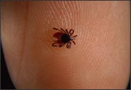
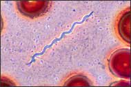
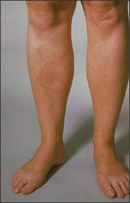

Introduction
Ms. Garcia's biology class went on a field trip to study plant communities in the hills near their school. After the trip was over, one student noticed a tick on her leg. The tick was identified as a black-legged tick. This tick species is often host to Borrelia burgdorferi, the bacteria that cause Lyme disease. Other students developed possible Lyme disease symptoms. For example, one student developed an unusual skin rash with a large red spot that grew bigger each day. Another student developed fever and muscle aches.
To start your investigation, you will take a closer look at what happens when samples of simulated blood serum (plasma without blood-clotting proteins) are tested using a procedure called an ELISA test. This test is similar to those used in medical diagnostic labs. Then, you will take on the role of a medical laboratory technician and test samples of simulated blood serum like those from the students of Ms. Garcia's class.

Deer ticks like this one can carry the bacteria that cause Lyme disease.
|

Notice the corkscrew shape that identifies these bacteria as spirochetes. |
|

A red "bulls-eye" rash is often the first symptom of Lyme disease. |